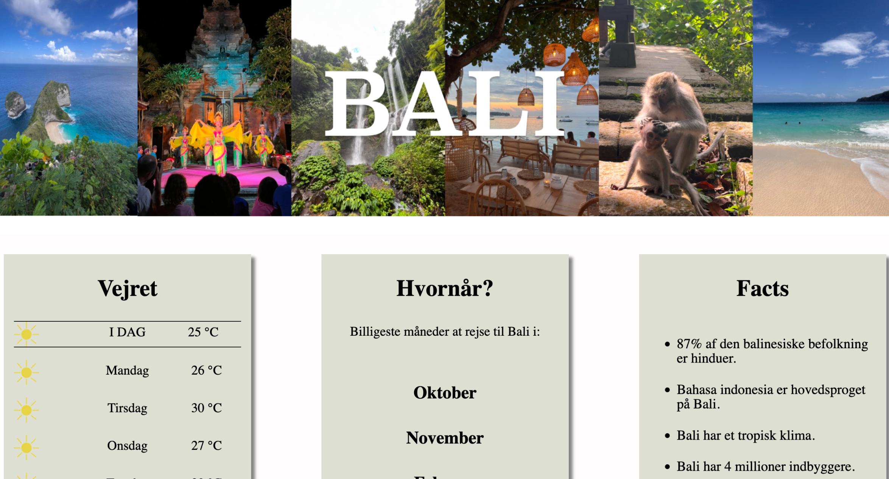

Tema 3
Grundlæggende UX/UI
Process
I dette tema lærte vi at lave prototyper i Figma. Der blev lagt vægt på at lave komponenter og dermed kunne lave en fuld funktionel prototype i Figma. Derudover lærte vi omkring UI og UX, med fokus på forventinger brugeren har, når de besøger en hjemmeside. Til sidst fik vi viden indenfor observationer og interviews, som skulle skulle være med til at skabe en fuld funktionel hjemmeside, som er brugervenlig og opfylder brugerens behov indenfor hjemmesiden.
Landing page
Løsning
Jeg skabte en hjemmeside, som skulle fungere som en guide til Bali. Jeg har brugt en masse billeder, jeg selv har taget, da jeg var dernede og rejse rundt. Det skulle give et indtryk af idyl, sommer og varme, som skulle få brugeren til at blive inspireret og få lyst til at rejse derned. Derudover brugte jeg en font, som skulle ligne håndskrift i et forsøg på at skabe et tillid mellem sitet og bruger. Til sidst er der lagt vægt på kortfattet information, som giver hurtig og effektiv information.
inspirationsside

Læring
Ud fra dette tema lærte jeg at bruge Figma til at lave prototyper. Derudover fik jeg kendskab til store dele af processen bag at designe en hjemmeside. Her menes der selve research fasen, hvor man sammenligner og tager noter af lignede hjemmesider. Derudover fik jeg ogs kendskab til interviews og observationsmetoder, som bruges til at optimere hjemmesiden med henblik på brugeroplevelsen.